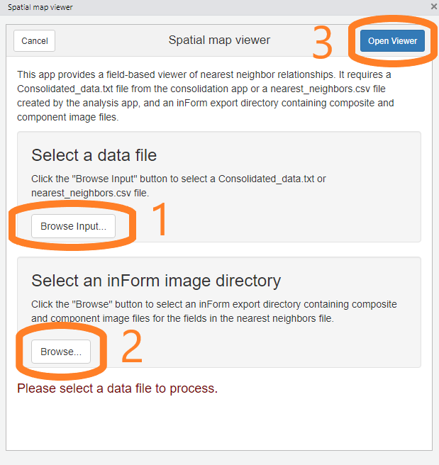
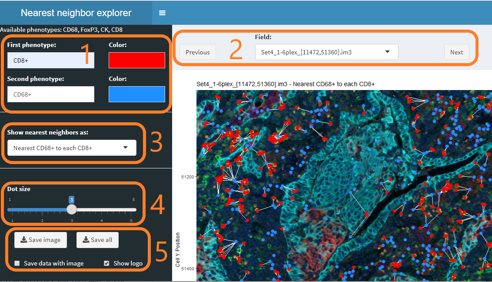

vignettes/spatial_map_viewer.Rmd
spatial_map_viewer.RmdThe “Spatial map viewer” addin allows viewing of nearest neighbor and touching relationships between cells of selected phenotypes in a single field. Views can be saved for later use.
This addin reads data from the Consolidated_data.txt file created by the “Consolidate and summarize” addin. It can also use the nearest_neighbors.txt or count_within.txt file created by the “Analyze consolidated data” addin when “Save nearest neighbor / count within details” is selected.
The viewer uses both composite and component image files for the fields of interest. These files are written by the inForm export step.
The composite images are shown as the background of the nearest neighbor visualizations. The colors and components shown are determined by the inForm export settings.
The component images are the source of metadata about fields that is needed to properly places cells in the visualizations.
Choose “Spatial map viewer” from the RStudio Addins menu to start the viewer.
The viewer’s initial screen allows you to select the nearest neighbor file and inForm export directory containing the fields of interest.
First, click the “Browse input” button and select a Consolidated_data.txt file from the “Consolidate and summarize” addin or a nearest_neighbors.txt or count_within.txt file created by the analysis addin.
Next, click the second “Browse” button and select the inForm output directory corresponding with the data file.
Finally, click “Open Viewer” to start the viewer.

The nearest neighbor viewer allows you to
Select and color phenotypes In this section, select the two phenotypes of interest and the colors to use to display the phenotypes. Both single phenotypes such as CD8+ and multiple phenotypes such as CD8+/PDL1+ are supported.
Select a field to view Use the dropdown to select a particular field, or use the Previous and Next buttons to browse through all the fields.
Select the type of nearest neighbor relationship “Nearest neighbor” is not a symmetric relationship—cell A may have a nearest neighbor B, whose nearest neighbor is not A. Try the different settings to find the one you want.
Control the dot size This slider controls the size of the dots displaying the cells. You may want to make the dots smaller before saving images.
Save a single view or views for all fields The “Save image” button will save the currently displayed image in your browser’s Download folder. The “Save all” button will use the current settings to save a directory or zip file containing images of all fields in the experiment.

If “Save data with image” is selected, a tab-separated data file is saved with the image(s). The data file contains one row for each pair of connected cells, i.e. the cells that are connected with a white line segment in the images.
In either case, the columns in the file will be